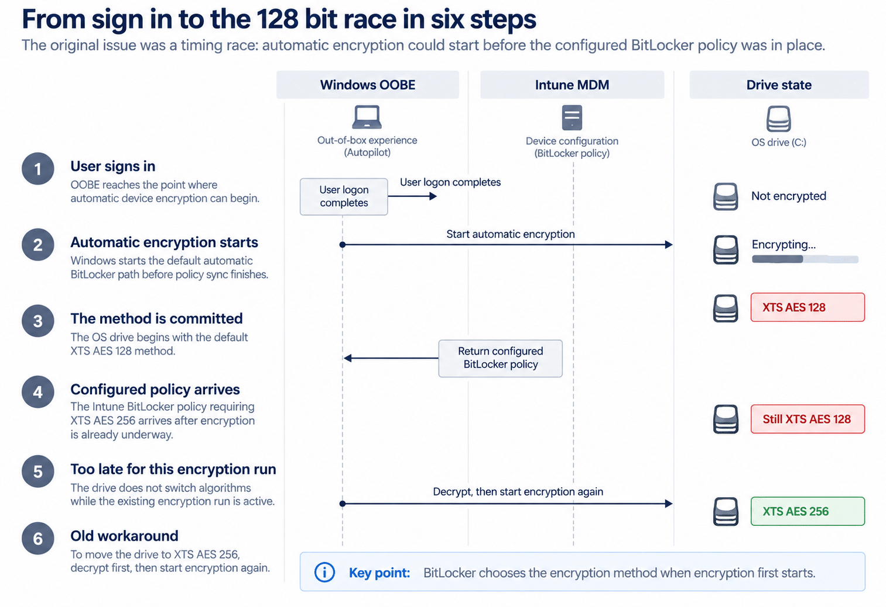
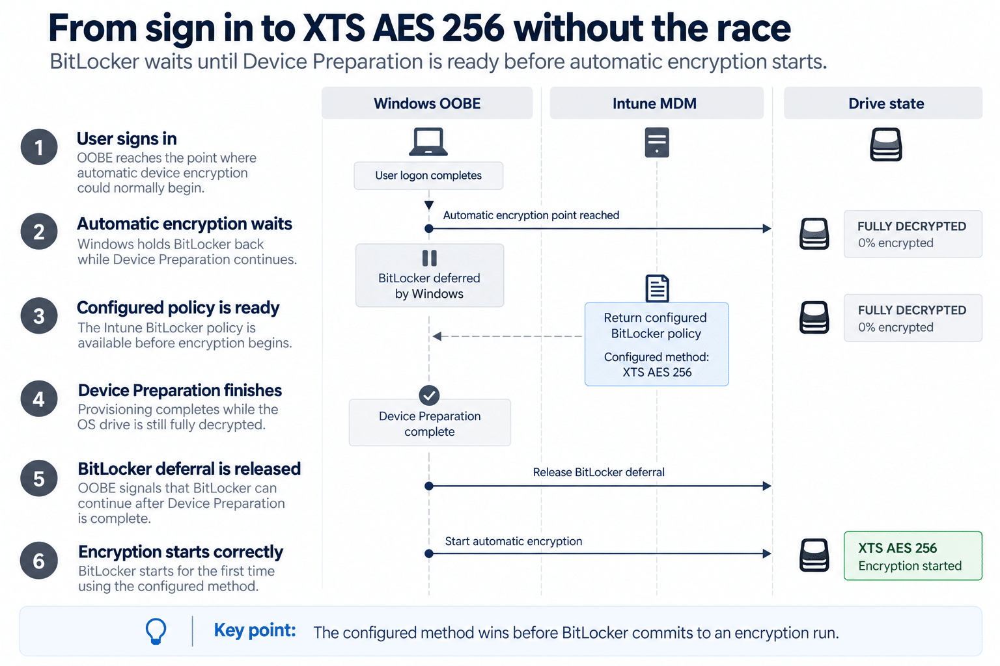
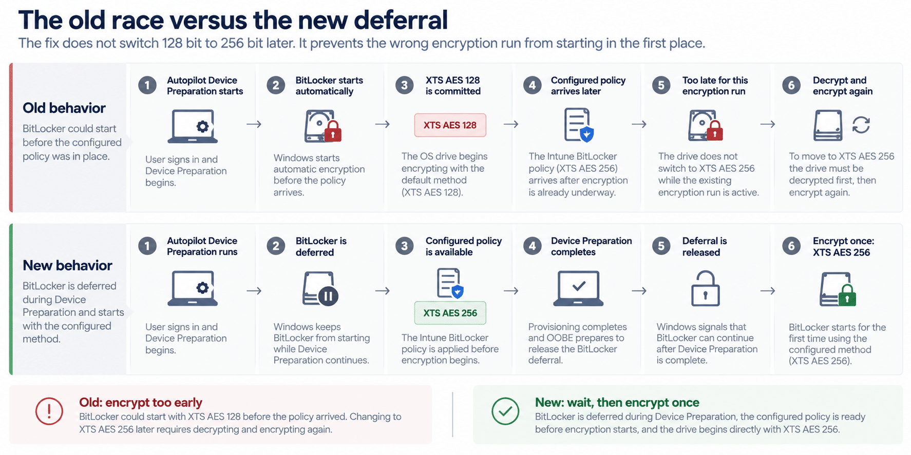

For a long time, Autopilot Device Preparation could start BitLocker too early, causing a device configured for XTS AES 256 to begin encrypting with the default XTS AES 128 instead. Microsoft has now changed that timing: BitLocker is held back during Device Preparation and only starts once the configured policy is ready, allowing the drive to begin directly with XTS AES 256.
For a long time, Autopilot Device Preparation could let BitLocker start too early, so a device configured for XTS AES 256 could begin encrypting with the default XTS AES 128 instead. Microsoft has now changed that timing: BitLocker stays deferred during Device Preparation and starts only after the configured policy is ready, allowing the drive to begin directly with XTS AES 256.
The BitLocker 256 bit race that stayed on the known issues list
For more than two years, one Autopilot Device Preparation problem kept hanging around: you could configure the XTS AES 256 BitLocker encryption in Intune and still end up with a newly provisioned Windows device encrypting its operating system drive with XTS AES 128.
Microsoft added this problem to the Windows Autopilot Device Preparation known issues page on July 8, 2024. The description was simple: some AP DP deployments could fall back to 128-bit even when the administrator configured 256-bit because of a race condition. That entry stayed there until September 14, 2026, when Microsoft updated it and marked the issue as resolved.
That history is visible on Microsoft’s AP DP known issues page.

That is a big change from the original version of this article. Back in 2025 there was no supported fix to point at. The only useful way to understand the problem was to reproduce it, inspect the timing, and test what happened when encryption was delayed. Now Microsoft has documented the intended behavior, so this rewrite can focus on the supported flow instead of hidden feature IDs, internal function names, or modified OOBE files.
Why Bitlocker 256 bit could lose even when the policy was correct
The problem was not that Intune could not configure XTS AES 256. The problem was “when” the setting arrived.
Windows supports automatic BitLocker encryption during OOBE. Microsoft documents XTS AES 128 as the default method for automatic encryption. It also documents an important rule: BitLocker uses the configured encryption algorithm when BitLocker is first enabled. If a different policy arrives after automatic encryption has already started, the drive has to be decrypted before the algorithm can be changed. Microsoft explains that behavior here.
That rule turns a small timing difference into a real deployment problem. If automatic encryption wins the race, XTS AES 128 is already in motion. Intune can deliver XTS AES 256 seconds later, and the policy itself can be completely valid, but it cannot switch the active encryption run from 128 to 256 halfway through.


Why the old Bitlocker 256 bit workaround was so ugly
Once the drive had started with XTS AES 128, there was no clean in-place change to XTS AES 256. The practical workaround was to decrypt the operating system drive and then start BitLocker again with the required method. That eventually produced the right result, but it meant encrypting a new device twice simply because the first encryption decision happened too early.
For environments that required 256-bit encryption for compliance or security policy, this was not just cosmetic. A freshly provisioned device could finish setup in a state that did not match the policy you had intentionally configured.
Microsoft now says the race is resolved
On September 14, 2026, Microsoft changed two pieces of documentation at the same time. The AP DP known issues page changed the BitLocker race from an active issue to resolved. The AP DP What’s new page added a performance and reliability improvement explaining the new behavior.
| What Microsoft now documents: The default 128-bit BitLocker encryption policy is no longer applied during OOBE. Administrator-configured BitLocker policies are prioritized so the device can use the configured encryption method. |
That wording matters because it addresses the actual race instead of trying to repair the drive afterward. Windows is no longer supposed to let the default 128-bit path get a head start during AP DP OOBE. The configured policy gets the opportunity to define the encryption method before BitLocker commits to it.
How the new BitLocker 256 bit handoff works
Microsoft does not document every internal implementation detail, and we do not need those details to understand the supported behavior. From an administrator’s point of view, the clear explanation is simple: BitLocker no longer gets the old 128-bit head start during AP DP; the configured policy gets a chance to apply first, and encryption starts only after Windows is ready to release it.


Step 1: AP DP reaches the encryption decision
The device is still moving through Windows OOBE and Autopilot Device Preparation. On capable hardware, Windows would normally be able to start automatic device encryption around this stage.
Step 2: The default 128 bit path no longer wins automatically
This is the important change. During AP DP OOBE, Microsoft now says the default 128 bit BitLocker policy is not applied. That removes the behavior that previously allowed XTS AES 128 to be selected simply because the administrator policy had not arrived yet.
Step 3: The configured BitLocker 256 bit policy gets priority
The BitLocker settings assigned by the administrator can now take precedence. If your operating system drive policy specifies XTS AES 256, Windows has a chance to receive and apply that setting before automatic encryption commits to an algorithm.
Step 4: The encryption method is already known before BitLocker starts
This is the part that fixes the race. BitLocker does not need a special conversion later. The correct method is available at the moment the drive starts encrypting.
Step 5: BitLocker starts once
When encryption begins, it can begin directly with the method from policy. For a tenant that requires XTS AES 256, the expected result is that the new device starts with XTS AES 256 from the beginning instead of starting at 128 and being repaired later.
Step 6: Normal management continues
After that, the device continues through the normal Intune and BitLocker lifecycle. Recovery key escrow, compliance, reporting, and other BitLocker policy settings are still separate parts of the configuration. This change is about which encryption method wins at the moment automatic encryption starts.
| What changed The default 128 bit policy no longer gets the automatic OOBE head start. Administrator configured BitLocker policy is prioritized before the encryption method is chosen. | What did not change You still need the BitLocker policy. Existing encrypted drives keep their current method. Recovery key escrow, compliance, and the rest of BitLocker management continue normally. |
Watching the supported flow happen on Windows 11 25H2
The flow diagram above explains the supported handoff. I also wanted to see it happen on a real device. On Windows 11 25H2 build 26200.9550, I watched the policy state, normal Windows event logs, and the BitLocker volume state during a fresh Autopilot Device Preparation run.

How the observed flow lines up with the supported flow
First, the configured BitLocker policy was already present before encryption started. The device reported EncryptionMethodWithXtsOs = 7, which maps to XTS AES 256, while the OS volume was still FullyDecrypted with 0 percent encrypted, no active encryption method, and protection still off.
Second, Device Preparation completed before BitLocker began encrypting. That matters because it means Windows did not need to fall back to the default 128 bit path to keep OOBE moving. The drive stayed in a safe waiting state until the handoff was ready.
Third, Windows made the BitLocker release visible in the normal event log. Shell-Core logged one event when the deferral release started and a second event when the release succeeded. Those two events give you a clean point-in-time marker for when OOBE allows BitLocker to continue.


Finally, BitLocker started only after that release, and it started with the configured method. In the same capture, BitLocker moved into EncryptionInProgress and reported XTS AES 256 on the first run. That is the practical difference between the old race and the new behavior: no early 128-bit run, no cleanup cycle, and no decrypt/re-encrypt detour on a fresh device.
What changed compared with the old workaround
The easiest way to see the value of the fix is to compare the number of encryption cycles. The old race could force the device to encrypt with 128, decrypt, and then encrypt again with 256. The new behavior is designed to let the configured 256 bit policy win before the first encryption run starts.


Old behavior: encrypt, decrypt, encrypt again. New behavior: wait, release the deferral, and encrypt once.
What happened to the hidden feature and the old code investigation?
The original 2025 article went much deeper because there was no supported answer yet. We found evidence that Windows was being changed to defer automatic BitLocker encryption until the AP DP provisioning state was ready. That investigation helped explain where Microsoft was heading, but the experimental implementation also had side effects and was not something I would recommend deploying.
Now that Microsoft documents the supported outcome, there is no reason to carry the reverse engineering steps into the deployment guidance. Do not enable old hidden feature IDs, patch OOBE JavaScript, or build a production process around those experiments. They are useful history, not the fix you should deploy in 2026.
The fix does not change drives that are already on 128 bit
The new behavior changes what happens when BitLocker starts on a fresh deployment. It does not rewrite the encryption algorithm on a drive that is already encrypted.
So there are two different problems to keep separate. A fresh AP DP device should be prevented from choosing the wrong method in the first place. An existing device that already chose XTS AES 128 remains an existing remediation problem. If that device really must move to XTS AES 256, the decrypt and encrypt again requirement still applies.

There is one Windows version detail I would not hide
Microsoft’s known issues page says the problem is resolved in KB5124012 and later Windows updates. That tells us the target behavior, but it still does not map every supported implementation to every 24H2 or 25H2 build, so lab validation still matters.
In my lab, Windows 11 25H2 build 26200.9457 did not yet show the expected new BitLocker behavior. Windows 11 25H2 build 26200.9550 did: the configured XTS AES 256 policy was already present while the drive was still decrypted, Device Preparation completed, Windows logged the deferral release, and BitLocker then started directly with XTS AES 256.
| What that means Microsoft has documented the target behavior and marked the known issue resolved. I would still validate the exact Windows build and update ring you deploy before removing an existing workaround. |
A much cleaner BitLocker 256 bit handoff
This issue was on the AP DP known issues list from July 2024 until September 2026. The original problem was simple but painful: automatic encryption could make the 128 bit decision before Intune delivered the 256 bit policy. Because BitLocker chooses its algorithm when encryption starts, being late by a small amount meant decrypting and encrypting the drive again.
Microsoft now says that race is resolved, and on Windows 11 25H2 build 26200.9550 I could watch the corrected order happen in practice. The configured XTS AES 256 policy was present while the drive was still decrypted, Windows released the BitLocker deferral after Device Preparation completed, and BitLocker started directly with XTS AES 256.
That is the change I wanted from the beginning. The remaining caution is not about the design of the fix, but about rollout validation: test the exact build and update ring you deploy, then retire the old remediation deliberately once your own fresh AP DP runs behave the same way.